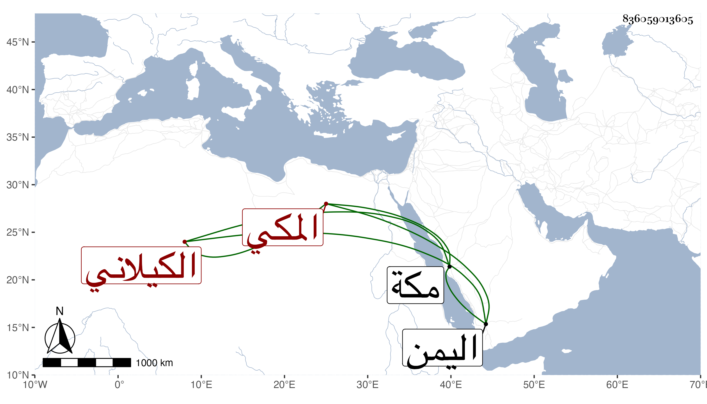

0902Sakhawi.DawLamic.ITO20230111-ara1.EIS1600.836059013605
Biography ID: 836059013605
91
أحمد بن علي بن محمد بن عبد الكريم بن حسن الكيلاني المكي ويعرف أبوه بالخواجا شيخ علي . ولد سنة سبع بمكة ونشأ بها فسمع في سنة أربع من الزين أبي بكر المراغي الختم من مسلم وأبي داود وابن حبان . ومات ظنا باليمن .
